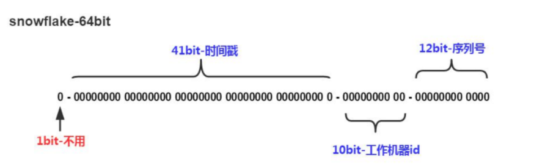

第1章 - 项目介绍和工程搭建
学习目标：
- 了解十次方项目需求；
- 了解前后端分离开发模式
- 理解RESTful
- 完成项目开发环境搭建
- 完成父工程、公共模块和文章微服务的搭建
- 掌握mybatis plus的使用，并开发完成文章微服务中文章的增删改查功能
- 掌握公共异常处理类的使用
1 十次方项目需求分析
1.1 项目介绍
十次方是程序员的专属社交平台，包括头条、问答、活动、交友、吐槽、招聘六大频道。

十次方名称的由来：2的10次方为1024，程序员都懂的。
如果你是一位技术大咖，那么赶快发布文章，增加知名度吧。
如果你是一名技术小白，那么赶快到问答频道寻求帮助的，这里高手如云哦！
如果你不想错过各种技术交流会，那么请经常关注活动频道吧。
如果你还是单身，那么赶快到交友频道找到你心仪的另一半。
如果你有太多的苦恼，那么赶快吐个槽吧。
如果你正在找工作或是想跳槽拿高薪，那么来招聘频道淘金吧。
1.2 项目需求
详见： 资源\文档\十次方需求规格说明书.docx
2 系统设计
2.1 开发模式
十次方项目采用前后端分离的开发模式
2.2 技术选型
后端：springboot + springcloud + mybatis plus + mysql5.7
前端：nodejs + NUXT + elementUI + vue
2.3 技术架构
采用前后端分离的系统架构

2.4 微服务模块划分
| 模块名称 | 模块中文名称 |
|---|---|
| tensquare_common | 公共模块 |
| tensquare_base | 基础微服务 |
| tensquare_article | 文章微服务 |
| tensquare_friend | 交友微服务 |
| tensquare_gathering | 活动微服务 |
| tensquare_qa | 问答微服务 |
| tensquare_recruit | 招聘微服务 |
| tensquare_user | 用户微服务 |
| tensquare_spit | 吐槽微服务 |
| tensquare_search | 搜索微服务 |
| tensquare_web | 前台微服务网关 |
| tensquare_manager | 后台微服务网关 |
| tensquare_eureka | 注册中心 |
| tensquare_config | 配置中心 |
| tensquare_sms | 短信微服务 |
| tensquare_notice | 消息通知微服务 |
2.5 数据库表结构分析
采用的分库分表设计，每个微服务模块为1个独立的数据库。
tensquare_article 文章
tensquare_base 基础
tensquare_friend 交友
tensquare_gathering 活动
tensquare_qa 问答
tensquare_recruit 招聘
tensquare_user 用户
tensquare_spit 吐槽
详见 资源\文档\十次方数据库文档.xlsx
2.6 API文档
课程提供了前后端开发接口文档（采用Swagger语言进行编写），并与Nginx进行了整 合。双击Nginx执行文件启动后，在地址栏输入http://localhost:801 即可访问API文档
前后端约定的返回码列表：
| 状态描述 | 返回码 |
|---|---|
| 成功 | 20000 |
| 失败 | 20001 |
| 用户名或密码错误 | 20002 |
| 权限不足 | 20003 |
| 远程调用失败 | 20004 |
| 重复操作 | 20005 |
3 RESTful架构说明
3.1 何为RESTful
RESTful架构是目前最流行的一种互联网软件架构
是Roy Thomas Fielding在他2000年的博士论文中提出的
是Representational State Transfer的缩写，翻译过来是”表现层状态转化”
是所有Web应用都应该遵守的架构设计指导原则
7个HTTP方法：GET、POST、PUT、DELETE、PATCH、HEAD、OPTIONS
3.2 接口规范
十次方项目使用GET、POST、PUT、DELETE四种方法
幂等性：不论你请求多少次，资源的状态是一样的。
3.2.1 GET
- 安全且幂等
- 获取表示
- 变更时获取表示（缓存）
==适合查询类的接口使用==
3.2.2 POST
- 不安全且不幂等
- 使用服务端管理的（自动产生）的实例号创建资源
- 创建子资源
- 部分更新资源
- 如果没有被修改，则不过更新资源（乐观锁）
==适合数据提交类的接口使用==
3.2.3 PUT
- 不安全但幂等
- 用客户端管理的实例号创建一个资源
- 通过替换的方式更新资源
- 如果未被修改，则更新资源（乐观锁）
==适合更新数据的接口使用==
3.2.4 DELETE
- 不安全但幂等
- 删除资源
==适合删除数据的接口使用==
请求返回响应码：
| 代码 | 含义 |
|---|---|
| ==200== | （OK）- 如果现有资源已被更改 |
| 201 | （created）- 如果新资源被创建 |
| 202 | （accepted）- 已接受处理请求但尚未完成（异步处理） |
| 301 | （Moved Permanently）- 资源的URI被更新 |
| 303 | （See Other）- 其他（如，负载均衡） |
| ==400== | （bad request）- 指代坏请求 |
| ==404== | （not found）- 资源不存在 |
| 406 | （not acceptable）- 服务端不支持所需表示 |
| 409 | （conflict）- 通用冲突 |
| 412 | （Precondition Failed）- 前置条件失败（如执行条件更新时的冲突） |
| 415 | （unsupported media type）- 接受到的表示不受支持 |
| ==500== | （internal server error）- 通用错误响应 |
| 503 | （Service Unavailable）- 服务当前无法处理请求 |
4 项目开发准备
4.1 开发环境
- 虚拟系统环境 VMware Workstation
- 虚拟机系统 CentOS 7
- 容器 docker
- JDK1.8
- 数据库 mysql 5.7
- 开发工具 idea
- 项目构建工具 maven
所有的第三方工具如mysql等都是运行在docker容器中的
注：虚拟机的帐户名root 密码itcast
4.2 mysql建库建表
进入安装了docker的虚拟机中，按以下顺序执行命令
（1）下载镜像（此步可省略）
docker pull centos/mysql‐57‐centos7
注：docker默认从国外的镜像网站拉取镜像，速度很慢。可以使用国内的阿里云镜像加速站点提升镜像拉取速度。具体步骤可以参考文档
docker配置国内镜像加速站点.pdf
（2）创建容器
xxxxxxxxxxdocker run -di --name=tensquare_mysql -p 3306:3306 -e MYSQL_ROOT_PASSWORD=root centos/mysql-57-centos7（3）连接MYSQL ，并执行资料中的建表脚本，创建article数据库
4.3 接口测试工具postman
postman是一款强大网页调试工具
- 能够发送任何类型的HTTP 请求 (GET，HEAD， POST，PUT。。。)
- 附带任意数量的参数
5 项目工程搭建
5.1 父工程搭建
创建项目类型为maven的父工程
打开idea开发工具
选择菜单file-new project ,弹出窗口中左侧菜单选择Maven ，点击next按钮

GroupId填写com.tensquare，ArtifacetId填写tensquare_parent，点击next按钮

点击Finish 完成
修改pom.xml文件，添加以下内容
x<parent><groupId>org.springframework.boot</groupId><artifactId>spring-boot-starter-parent</artifactId><version>2.1.4.RELEASE</version><relativePath/></parent><properties><project.build.sourceEncoding>UTF-8</project.build.sourceEncoding><project.reporting.outputEncoding>UTF-8</project.reporting.outputEncoding><java.version>1.8</java.version><maven.compiler.source>1.8</maven.compiler.source><maven.compiler.target>1.8</maven.compiler.target><mybatisplus-spring-boot-starter.version>1.0.5</mybatisplus-spring-boot-starter.version><mybatisplus.version>2.2.0</mybatisplus.version><fastjson.version>1.2.39</fastjson.version><gson.version>2.8.0</gson.version></properties><dependencies><dependency><groupId>org.springframework.boot</groupId><artifactId>spring-boot-starter-web</artifactId></dependency><dependency><groupId>org.springframework.boot</groupId><artifactId>spring-boot-starter-test</artifactId><scope>test</scope></dependency></dependencies><repositories><repository><id>spring-snapshots</id><name>Spring Snapshots</name><url>https://repo.spring.io/snapshot</url><snapshots><enabled>true</enabled></snapshots></repository><repository><id>spring-milestones</id><name>Spring Milestones</name><url>https://repo.spring.io/milestone</url><snapshots><enabled>false</enabled></snapshots></repository></repositories><pluginRepositories><pluginRepository><id>spring-snapshots</id><name>Spring Snapshots</name><url>https://repo.spring.io/snapshot</url><snapshots><enabled>true</enabled></snapshots></pluginRepository><pluginRepository><id>spring-milestones</id><name>Spring Milestones</name><url>https://repo.spring.io/milestone</url><snapshots><enabled>false</enabled></snapshots></pluginRepository></pluginRepositories>
5.2 搭建公共子模块
5.2.1 搭建子模块步骤
右键点击父工程tensquare_parent，选择 New -> Module 弹出窗口选择Maven ,点击next按钮
ArtifacetId填写tensquare_common，点击next按钮

点击finish
5.2.2 创建公共实体类和工具类
新建com.tensquare.entity包，包下创建Result类，用于controller返回结果
xxxxxxxxxxpublic class Result {private boolean flag;//是否成功private Integer code;// 返回码private String message;//返回信息private Object data;// 返回数据public Result(boolean flag, Integer code, String message, Object data) {super();this.flag = flag;this.code = code;this.message = message;this.data = data;}public Result() { }public Result(boolean flag, Integer code, String message) {super();this.flag = flag;this.code = code;this.message = message;}public boolean isFlag() {return flag;}public void setFlag(boolean flag) {this.flag = flag;}public Integer getCode() {return code;}public void setCode(Integer code) {this.code = code;}public String getMessage() {return message;}public void setMessage(String message) {this.message = message;}public Object getData() {return data;}public void setData(Object data) {this.data = data;}}
创建类PageResult ，用于返回分页结果
xxxxxxxxxxpublic class PageResult<T> {private Long total;private List<T> rows;public PageResult(Long total, List<T> rows) {super();this.total = total;this.rows = rows;}//getter and setter ....}
返回码定义类
xxxxxxxxxxpublic class StatusCode {public static final int OK=20000;//成功public static final int ERROR =20001;//失败public static final int LOGINERROR =20002;//用户名或密码错误public static final int ACCESSERROR =20003;//权限不足public static final int REMOTEERROR =20004;//远程调用失败public static final int REPERROR =20005;//重复操作}
分布式ID生成器
课程中已经提供了分布式ID生成器
资源\微服务相关\工具类\IdWorker.java
tensquare_common工程创建util包，将IdWorker.java直接拷贝到tensquare_common工程的util包中。
不能使用数据库本身的自增功能来产生主键值，原因是生产环境为分片部署的。
使用snowflake （雪花）算法（twitter出品）生成唯一的主键值

- 41bit的时间戳可以支持该算法使用到2082年
- 10bit的工作机器id可以支持1024台机器
- 序列号支持1毫秒产生4096个自增序列id
- 整体上按照时间自增排序
- 整个分布式系统内不会产生ID碰撞
- 每秒能够产生26万ID左右
6 文章微服务-文章管理
6.1 模块搭建
在tensquare_parent项目下创建tensquare_article模块，创建过程参考第4.2节公共子模块的创建过程
修改tensquare_article模块的pom.xml文件，添加以下依赖
xxxxxxxxxx<dependencies><dependency><groupId>mysql</groupId><artifactId>mysql-connector-java</artifactId></dependency><dependency><groupId>com.tensquare</groupId><artifactId>tensquare_common</artifactId><version>1.0-SNAPSHOT</version></dependency></dependencies>
创建com.tensquare.article包，并创建BaseApplication启动类
xxxxxxxxxxpackage com.tensquare.article;import org.springframework.boot.SpringApplication;import org.springframework.boot.autoconfigure.SpringBootApplication;import org.springframework.context.annotation.Bean;import util.IdWorker;public class ArticleApplication {public static void main(String[] args) {SpringApplication.run(ArticleApplication.class, args);}public IdWorker idWorker(){return new IdWorker(1,1);}}
在resources文件夹下创建application.yml，并添加以下内容
xxxxxxxxxxserverport9004springapplicationnametensquare-article #指定服务名datasourcedriver-class-namecom.mysql.jdbc.Driverurljdbcmysql//192.168.200.1293306/tensquare_article?characterEncoding=utf-8usernamerootpasswordroot
6.2 文章管理-CRUD
6.2.1 表结构分析
tensquare_article数据库，tb_article表
| 文章表 | tb_article | ||
|---|---|---|---|
| 字段名称 | 字段含义 | 字段类型 | 备注 |
| id | ID | 文本 | |
| columnid | 专栏ID | 文本 | |
| userid | 用户ID | 文本 | |
| title | 文章标题 | 文本 | |
| content | 文章内容 | 文本 | |
| image | 文章封面 | 文本 | |
| createtime | 发表日期 | 日期 | |
| updatetime | 修改日期 | 日期 | |
| ispublic | 是否公开 | 文本 | 0：不公开 |
| istop | 是否置顶 | 文本 | 0：不置顶 |
| visits | 浏览量 | 整型 | |
| thumbup | 点赞数 | 整型 | |
| comment | 评论数 | 整型 | |
| state | 审核状态 | 文本 | 0：未审核 1：已审核 |
| channelid | 所属频道 | 整型 | 关联频道表ID |
| url | URL地址 | 文本 | |
| type | 文章类型 | 文本 | 0：分享 |
6.2.2 集成mybatis plus
mybatis plus概述
- 是对Mybatis框架的二次封装和扩展
- 纯正血统：完全继承原生 Mybatis 的所有特性
- 最少依赖：仅仅依赖Mybatis以及Mybatis-Spring
- 性能损耗小：启动即会自动注入基本CURD ，性能无损耗，直接面向对象操作
- 自动热加载：Mapper对应的xml可以热加载，大大减少重启Web服务器时间，提升开发效率
- 性能分析：自带Sql性能分析插件，开发测试时，能有效解决慢查询
- 全局拦截：提供全表delete、update操作智能分析阻断
- 避免Sql注入：内置Sql注入内容剥离器，预防Sql注入攻击
在pom.xml文件中引入相关依赖
xxxxxxxxxx<!-- mybatis-plus begin --><dependency><groupId>com.baomidou</groupId><artifactId>mybatisplus-spring-boot-starter</artifactId><version>${mybatisplus-spring-boot-starter.version}</version></dependency><dependency><groupId>com.baomidou</groupId><artifactId>mybatis-plus</artifactId><version>${mybatisplus.version}</version></dependency><!-- mybatis-plus end -->
在配置文件application.yml中添加相关配置
xxxxxxxxxx# Mybatis-Plus 配置mybatis-plus# mapper-locations: classpath:/mapper/*Mapper.xml#实体扫描，多个package用逗号或者分号分隔typeAliasesPackagecom.tensquare.article.pojoglobal-configid-type1 #0:数据库ID自增 1:用户输入iddb-column-underlinefalserefresh-mappertrueconfigurationmap-underscore-to-camel-casetruecache-enabledtrue #配置的缓存的全局开关lazyLoadingEnabledtrue #延时加载的开关multipleResultSetsEnabledtrue #开启延时加载，否则按需加载属性log-implorg.apache.ibatis.logging.stdout.StdOutImpl #打印sql语句,调试用修改启动类，增加Mapper扫描注解
xxxxxxxxxx//Mapper扫描注解("com.tensquare.article.dao")public class ArticleApplication {public static void main(String[] args) {SpringApplication.run(ArticleApplication.class, args);}public IdWorker idWorker() {return new IdWorker(1, 1);}}
6.2.3 实现查询所有文章和根据id号查询文章功能
在com.tensquare.article包下面创建pojo包，并创建Article实体类
xxxxxxxxxxpackage com.tensquare.article.pojo;import com.baomidou.mybatisplus.annotations.TableId;import com.baomidou.mybatisplus.annotations.TableName;import com.baomidou.mybatisplus.enums.IdType;import java.io.Serializable;import java.util.Date;("tb_article")public class Article implements Serializable {(type = IdType.INPUT)private String id;//IDprivate String columnid; //专栏IDprivate String userid; //用户IDprivate String title; //标题private String content; //文章正文private String image; //文章封面private Date createtime; //发表日期private Date updatetime; //修改日期private String ispublic; //是否公开private String istop; //是否置顶private Integer visits; //浏览量private Integer thumbup; //点赞数private Integer comment; //评论数private String state; //审核状态private String channelid; //所属频道private String url; //URLprivate String type; //类型//getters and setters}
编写数据访问接口dao
xxxxxxxxxxpublic interface ArticleDao extends BaseMapper<Article> {}
编写service
xxxxxxxxxxpublic class ArticleService {private ArticleDao articleDao;public List<Article> findAll() {return articleDao.selectList(null);}public Article findById(String id) {return articleDao.selectById(id);}}编写controller
xxxxxxxxxx("/article")public class ArticleController {private ArticleService articleService;(method = RequestMethod.GET)public Result findAll() {List list = articleService.findAll();return new Result(true, StatusCode.OK, "查询成功", list);}(value = "/{id}", method = RequestMethod.GET)public Result findById( String id) {Article Article = articleService.findById(id);return new Result(true, StatusCode.OK, "查询成功", Article);}}
6.2.4 添加文章、修改文章和删除文章
添加文章 ArticleController中添加代码
xxxxxxxxxx//新增标签数据接口(method = RequestMethod.POST)public Result add( Article article) {articleService.add(article);return new Result(true, StatusCode.OK, "添加成功");}ArticleService中添加代码
xxxxxxxxxxprivate IdWorker idWorker;public void add(Article article) {article.setId(idWorker.nextId() + "");articleDao.insert(article);}
修改文章
ArticleController中添加代码
xxxxxxxxxx//修改标签数据接口(value = "{id}", method = RequestMethod.PUT)public Result update( String id, Article article) {article.setId(id);articleService.update(article);return new Result(true, StatusCode.OK, "修改成功");}ArticleService中添加代码
xxxxxxxxxxpublic void update(Article article) {//根据id号更新//方法1articleDao.updateById(article);//方法2EntityWrapper wrapper = new EntityWrapper<Article>();wrapper.eq("id", article.getId());articleDao.update(article, wrapper);}
删除文章
ArticleController中添加代码
xxxxxxxxxx//删除文章数据接口(value = "{id}", method = RequestMethod.DELETE)public Result delete( String id) {articleService.delete(id);return new Result(true, StatusCode.OK, "删除成功");}ArticleService中添加代码
xxxxxxxxxxpublic void delete(String id) {articleDao.deleteById(id);}
6.2.5 条件查询和分页
条件查询
使用Mybatis Plus 提供的EntityWrapper对象封装where查询条件，例如以下使用方式：
xxxxxxxxxxEntityWrapper wrapper = new EntityWrapper<Article>();wrapper.eq("id", article.getId());//动态sql，例如<if test="null != field"> and field='xxx' </if>wrapper.eq(null != map.get(field), field, map.get(field));分页
- 使用 Mybatis Plus 提供的Page对象
- 向Mybatis Plus中注入PaginationInterceptor插件
- 新建config包，创建MybatisPlusConfig对象，添加下面的代码
xxxxxxxxxxpublic class MybatisPlusConfig {public PaginationInterceptor paginationInterceptor() {return new PaginationInterceptor();}}完整代码
ArticleController中添加代码
xxxxxxxxxx(value="/search/{page}/{size}", method = RequestMethod.POST)public Result search( Map map, int page, int size) {Page page1 = articleService.search(map, page, size);return new Result(true, StatusCode.OK, "查询成功", new PageResult((int) page1.getTotal(), page1.getRecords()));}ArticleService中添加代码
xxxxxxxxxxpublic Page search(Map map, int page, int size) {EntityWrapper wrapper = new EntityWrapper<Article>();Set<String> fieldSet = map.keySet();for(String field : fieldSet) {//wrapper.eq(field, map.get(field));wrapper.eq(null != map.get(field), field, map.get(field));}Page page1 = new Page(page, size);List list = articleDao.selectPage(page1, wrapper);page1.setRecords(list);return page1;}
6.3 公共异常处理类
为了使代码容易维护，减少冗余，我们创建一个类集中处理异常
在com.tensquare.user.controller包下创建公共异常处理类BaseExceptionHandler，并添加代码
xxxxxxxxxxpublic class BaseExceptionHandler { (value = Exception.class) public Result error(Exception e) { e.printStackTrace(); return new Result(false, StatusCode.ERROR, e.getMessage()); }}ArticleController中添加测试代码
xxxxxxxxxx(value="/exception", method = RequestMethod.GET)public Result exception() throws Exception { throw new Exception("测试统一异常处理");}
6.4 跨域处理
何谓跨域
浏览器从一个域名的网页去请求另一个域名的资源时，域名、端口、协议任一不同，都是跨域 。
十次方项目是采用前后端分离开发的，也是前后端分离部署的，必然会存在跨域问题。
如何解决跨域
只需要在controller类上添加注解
@CrossOrigin即可！